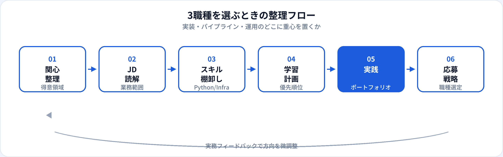

AIエンジニア、機械学習エンジニア（MLエンジニア）、MLOpsエンジニアは、いずれもAIを動くシステムとして届けるエンジニア職ですが、モデル開発・パイプライン・運用自動化のどこに重心を置くかが異なります。本記事では3職種を業務・スキル・年収の観点で比較し、2026年6月時点の市場感覚でキャリアの選び方を整理します。
3職種の役割分担
ざっくり言うと、AIエンジニアはAI機能の実装全般、機械学習エンジニアは学習パイプラインとモデル実装、MLOpsエンジニアは継続的デリバリー・監視・再学習基盤、という分担イメージです。
ただし日本の求人ではAIエンジニアとMLエンジニアがほぼ同義で使われることも多く、MLOpsは別チームか同一人物の兼務かは組織次第です。転職活動では肩書きより、JDに書かれた具体業務（学習コードを書くのか、Kubernetesで回すのか）を見てください。
比較一覧表
| 観点 | AIエンジニア | 機械学習エンジニア | MLOpsエンジニア |
|---|---|---|---|
| 主な焦点 | AI機能の設計・実装全般 | 特徴量・学習・評価・デプロイ | CI/CD・監視・再学習・基盤 |
| 典型成果物 | 推論API、AI機能、PoC→本番 | 学習パイプライン、モデル、オフライン評価 | デプロイパイプライン、監視ダッシュボード |
| 中心スキル | Python、ML、クラウド | Python、ML理論、パイプライン | Docker/K8s、CI/CD、MLflow等 |
| 年収目安（当サイト） | 500万〜1,200万円 | 550万〜1,300万円 | 600万〜1,350万円 |
| 詳細ガイド | AIエンジニアとは | MLエンジニアとは | MLOpsエンジニアとは |
業務内容の違い

AIエンジニア
データ前処理からモデル学習・評価・本番実装まで、AI機能をエンドツーエンドで担うことが多い。生成AI連携も含む広いJDあり。
機械学習エンジニア
特徴量設計、学習の再現性、オフライン評価、推論サービス化にこだわるポジション。データエンジニアと連携してパイプライン上で動く。
MLOpsエンジニア
学習ジョブの自動化、モデルレジストリ、デプロイ戦略、ドリフト監視、再学習トリガー。モデル精度より配信の信頼性が中心。
小規模チームでは「AIエンジニア」名目で3領域すべてを担うこともあります。大規模組織ではMLエンジニアがモデルを作り、MLOpsが配信基盤を支える水平分担が進みやすいです。
スキル要件の違い
| スキル | AIエンジニア | MLエンジニア | MLOpsエンジニア |
|---|---|---|---|
| Python / ML | 必須 | 必須（最深め） | 重要（実装より運用） |
| 特徴量・学習理論 | 必須 | 必須（日常の中心） | 基礎理解が必要 |
| デプロイ・API | 必須 | 必須 | 必須（自動化が中心） |
| Docker / K8s | 中級以上で重視 | 中級以上で重視 | 必須級が多い |
| CI/CD・監視 | 実務で差がつく | 実務で差がつく | 必須（日常の中心） |
学習のつながり
3職種共通でG検定レベルのML基礎が有用です。TF-003（機械学習とAI）、TF-194（MLOps）、実践演習 G-458（MLOps）で概念を整理できます。
年収の違い
当サイトの職種マスタでは、AIエンジニア 500万〜1,200万円、機械学習エンジニア 550万〜1,300万円、MLOpsエンジニア 600万〜1,350万円を目安としています（2026年6月時点）。帯域は大きく重なり、経験・企業規模・担当範囲で上下します。
MLOpsはインフラ・SRE寄りの希少スキルセットが評価され、下限がやや高めに見える傾向があります。一方、シニアのAI/MLエンジニアがアーキテクチャ全体を担う場合は、MLOps単独より上限が上がることもあります。
どれを選ぶべきか
| 向いているサイン | おすすめの職種 |
|---|---|
| モデルを作って本番まで届けたい。幅広くAI機能に触れたい | AIエンジニア（またはMLエンジニア） |
| 特徴量・学習・評価指標へのこだわりが強い | 機械学習エンジニア |
| DevOps/SRE経験があり、自動化・監視・信頼性が好き | MLOpsエンジニア |
| 未経験からプログラミングを学び始める | AI / MLエンジニアのジュニア（MLOpsは後からでも可） |
| 生成AI・LLMの実装に特化したい | 生成AIエンジニアも検討（本比較の対象外だが近い領域） |
迷ったときは、学習パイプライン＋推論APIを一人で作るポートフォリオから始めるのがおすすめです。そこから運用自動化に興味が出ればMLOps寄り、モデル精度に深く入ればML寄りと自然に分岐できます。
相互移行・ステップアップ
-
AI / ML → MLOps
デプロイ・監視の課題に直面したタイミングで、CI/CDとK8sを深掘り。社内のMLOpsチームへ異動するパターンも多い。
-
MLOps → AI / ML
パイプラインは整っているがモデル改善がボトルネックのとき、学習コードと特徴量設計のスキルを足してML寄りへ。
-
AIエンジニア ↔ MLエンジニア
実務上の差は小さいことが多く、JDの文言差以上の大きな転職ハードルにはなりにくい。
-
いずれも → テックリード / プラットフォーム
複数モデル・複数チームの技術方針、社内ML基盤の設計へ。マネジメントトラックも開く。
よくある質問
AIエンジニアと機械学習エンジニアは同じ？
企業によっては同義です。MLエンジニアは学習パイプライン寄りのJDが多い傾向があります。各職種ガイドもあわせて参照してください。
未経験者はどれが現実的？
AIまたはMLエンジニアのジュニアが入口になりやすいです。インフラ経験者はMLOpsも選択肢になります。
MLOpsエンジニアの年収は他より高い？
目安帯域はやや高めですが、シニアのAI/MLエンジニアと大きく重なります。担当範囲と希少性で決まります。
3職種を兼務することはある？
小規模チームでは珍しくありません。組織が成熟するほど分担が進みます。
G検定はどの職種に役立つ？
3職種いずれにもMLの基礎概念は有用です。MLOpsを意識するなら試験範囲のMLOps・データ運用の項目を重点的に学ぶとよいです。